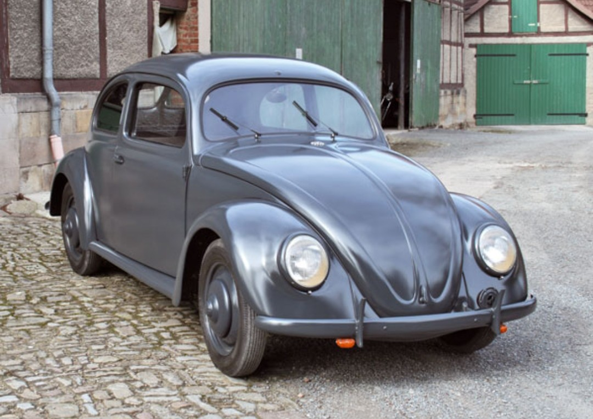

Pendant la Seconde Guerre mondiale, Volkswagen ne produit presque pas de voitures civiles. L’usine est entièrement réorientée vers l’effort de guerre et fournit plusieurs véhicules militaires légers, utilisés sur de nombreux fronts : Afrique du Nord, front de l’Est, Italie, Normandie. Les principaux modèles sont le Kübelwagen, le Schwimmwagen, le KdF‑Wagen et le Type 82E.

Véhicule léger utilitaire, le plus produit par Volkswagen pendant la guerre. Basé sur la mécanique du KdF‑Wagen, il est simple, fiable et très léger. Son moteur refroidi par air le rend particulièrement adapté aux conditions difficiles, notamment en Afrique du Nord.

Version amphibie du Kübelwagen. Doté d’un système 4x4 et d’une hélice arrière rabattable, il peut circuler sur route, hors‑piste et sur l’eau. Il est très utilisé par les unités de reconnaissance, notamment sur le front de l’Est.

Ancêtre direct de la future Volkswagen Coccinelle. Conçu comme “voiture du peuple”, il est finalement utilisé surtout par la propagande et certains officiers. Sa carrosserie arrondie et ses suspensions le rendent moins adapté aux conditions de combat que le Kübelwagen.

Hybride entre la carrosserie du KdF‑Wagen et le châssis du Kübelwagen Type 82. Ce véhicule offre une meilleure garde au sol et une robustesse accrue, tout en conservant l’apparence d’une voiture fermée. Il est principalement utilisé comme véhicule de liaison pour les officiers et certaines unités de commandement.
Les véhicules Volkswagen de la Seconde Guerre mondiale illustrent la transformation d’une usine civile en outil de guerre. Le Kübelwagen et le Schwimmwagen sont de véritables véhicules militaires, engagés sur de nombreux fronts, tandis que le KdF‑Wagen et le Type 82E montrent l’adaptation de la “voiture du peuple” aux besoins de liaison et de commandement.